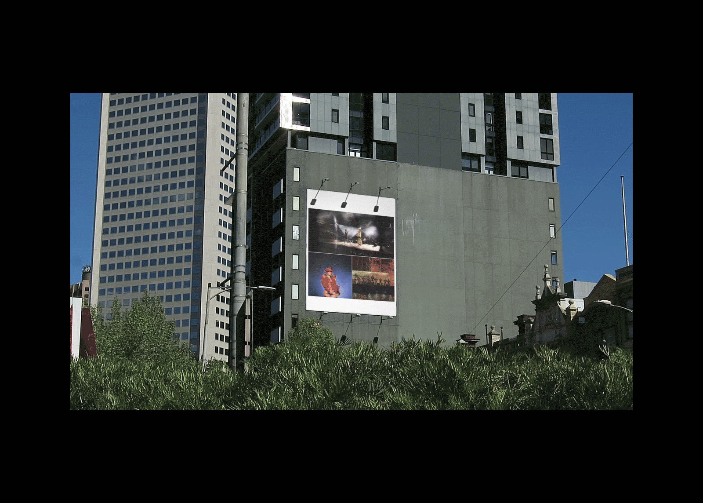

Untitled for Unlimited Limited, 720p video
Watch⇗
This project investigates how the development of the Internet has created a space where opposing ideas of 'personal' and 'impersonal' exist closely.
Watch⇗
This project investigates how the development of the Internet has created a space where opposing ideas of 'personal' and 'impersonal' exist closely.


Untitled for Unlimited Limited, 52 pages, 107.9 × 174.6 mm
This project investigates how the development of the Internet has created a space where opposing ideas of 'personal' and 'impersonal' exist closely.
This project investigates how the development of the Internet has created a space where opposing ideas of 'personal' and 'impersonal' exist closely.


Watching You Watching Me, 740 pages, 210 × 297 × 42 mm
A book that explores the moods and meanings of a shared gaze, using art art collated from the Met Museum online collection. The format is reminiscent of traditional art books, but the close cropping of the images and persistent repetition of layouts builds a sense of tension between the subjects in the artworks and the reader.
A book that explores the moods and meanings of a shared gaze, using art art collated from the Met Museum online collection. The format is reminiscent of traditional art books, but the close cropping of the images and persistent repetition of layouts builds a sense of tension between the subjects in the artworks and the reader.


Watching You Watching Me, microsite
Visit⇗
The promotional site extends on the idea of “the look” by directing the gaze toward the user.
Visit⇗
The promotional site extends on the idea of “the look” by directing the gaze toward the user.


Colour Diary, 64 pages, 176 × 250 mm
Part sketchbook, retrospective journal and colour swatch compilation, this publication collects fragments of a trip to Japan and South Korea.
Part sketchbook, retrospective journal and colour swatch compilation, this publication collects fragments of a trip to Japan and South Korea.


Postscript, 60 pages, 176 × 250 mm
This is a speculative publication that begins with an old album full of stamps. It not only archives this collection of ephemera, but also explores personal and local histories. The course of this investigation is documented through existing material, photographs and words.
This is a speculative publication that begins with an old album full of stamps. It not only archives this collection of ephemera, but also explores personal and local histories. The course of this investigation is documented through existing material, photographs and words.


Phở, 56 pages, 176 × 250 mm
A riso printed publication that examines the various historical and cultural contexts of phở, from it’s unclear origins to it’s recent popularisation.
A riso printed publication that examines the various historical and cultural contexts of phở, from it’s unclear origins to it’s recent popularisation.